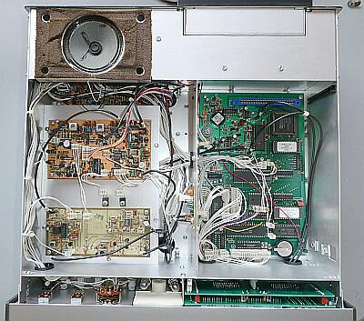
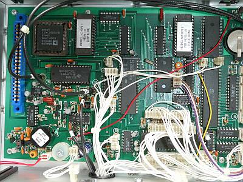
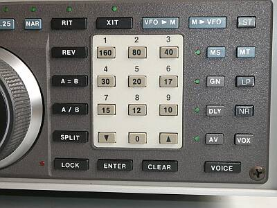
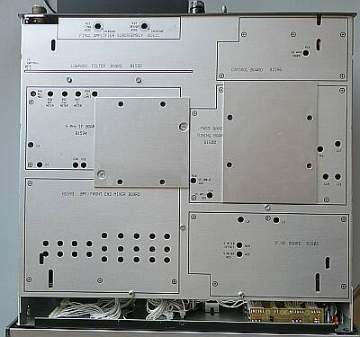
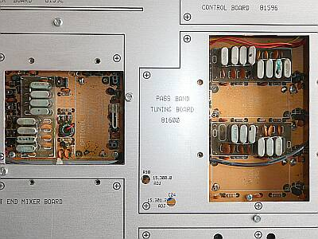
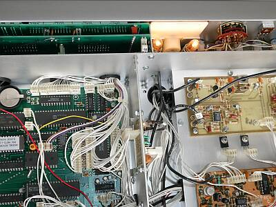
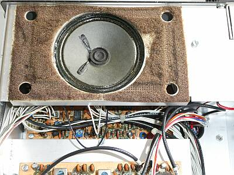

 |
こちらが、本体上部、上ケースを取り外して見た状態です
右側の大き目な基板が、ロジック・ボードです
内臓スピーカーも、本体に取り付けられていますので上蓋の取り外しには気を使わなくていいです（ひとつ前のＯＭＮＩ- Ｖは、上蓋に取り付いていた） |
 |
ロジック・ボード
左下の黒い円柱状のものは、オーブン付きのＴＣＸＯ
周波数安定度についても、前モデルの ＯＭＮＩ Ｖ に比べ向上策がとられています
白いラベルの張られている２つのＲＯＭが、Ｐｌｕｓ相当へのＶｅｒＵｐのために交換したものです
余談ですが、ＲＯＭを引き抜くのは、意外と大変な作業です
左端の何も刺さっていない基板コネクタは、音声アナウンス用オプションボード（Ｍｏｄｅｌ２５７）装着用です |
 |
ＯＭＮＩ-Vｉ Ｐｌｕｓ相当にＲＯＭ交換でバージョン・アップ
関係して、ボタンの持つ機能にも変化が
既存のボタンの上から新機能に相当するラベルを張りました
右端の列に注目
ＳＴ 元は、ＤＩＭ
ＬＰ 元は、ＣＬＫ
ＮＲ 元は、ＳＴ
これらが、ＲＯＭ交換してＶｅｒＵｐしたために機能の変更となったボタンです |
 |
下面のケースを外すと、このようなアルミ製のシールド板が現れます
国産の無線機にはない美しさがあります
左の四角なプレートの下は、９MHｚクリスタルフィルタ
右の長四角のプレート下には、６．３ＭＨｚクリスタルフィルタ
を取り付ける場所です
ボード・ナンバーをはじめ、調整の対象がきちんと表記してあります
|
 |
左側が、９ＭＨｚクリスタルフィルタ部
２．４ＫＨｚ巾のもの１種類を内蔵
右側が、６．３ＭＨｚクリスタルフィルタ部
２．４ＫＨｚ巾と、０．５ＫＨｚ巾の２種類を内蔵
（０．５ＫＨｚ巾は、６ポールでオプションを追加）
２．４ＫＨｚフィルタは、いずれも８ポール
パスバンドチューニングでフィルタを２段使うことで、１６ポールのフィルタを内蔵との表記もあります
いずれにしても急峻な特性を持つフィルタが採用されています |
 |
周波数表示は、７セグメントＬＥＤが使用されているのですが、メーター照明は白熱球…従来型のＰＬです
発熱はしますが、昼光色で、これはこれで良いものです
周囲からはずいぶんと距離がとってありますので、どこかを焦す心配はなさそうです
|
 |
こちらは、内蔵スピーカー
周囲のウレタン・スポンジがボロボロです
古い製品では、よく目にするパターンです
どこかで交換、張り直しをせざるを得ない問題かと思います |
| 高周波的には、きちんとした設計・・・アルミ板でユニット毎にきちんとシールド・・・市販商品の中にあって、ここまで徹底できている製品ばかりではありません |
|
ＴＥＮ-ＴＥＣらしいというか、独特の使用感、受信が楽しめます
個人的にですが、ＣｏｒｓａｉｒII（Ｍｏｄｅｌ５６１） ＰＡＲＡＧＯＮ も含め、ＴＥＮ-ＴＥＣ製品の使用感は好きです（受信時の雰囲気は、好みです！） |